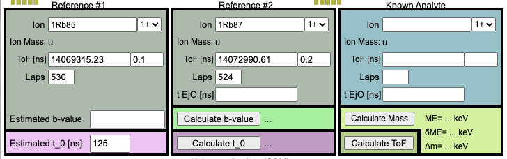
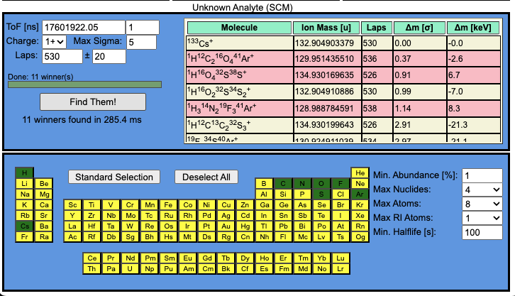

MRTOF Calculator User Manual
A simple use manual for the features available in the MRTOF Calculator.
Reference and Known Analyte Sections

At the top you will find three sections. The ion name must be entered with the convention of n1X1A1i1; n2X2A2i2; n3X3A3i3, where nXA is AXn and i represents the state: m, n, or blank for the first isomer, second isomer, or ground state, respectively. For example, 12C213C1H416O would be entered as 2C12;1C13;4H1;1O16.
All calculations require the information for Reference #1 and an estimated t0 value. Calculations involving ions with a number of laps different from that of Reference #1 also require at least an estimated b-value. In the case of an estimated b-value, the software will use δb=1 ns, while in the case of an estimated t0 it uses δt0=10 ns.
If Reference #2 makes a different number of laps than Reference #1, the “Calculate b-value” button will calculate the b-value and δb. If Reference #2 is a different nuclide with the same number of laps as Reference #1, the “Calculate t0” button will calculate the t0 and δt0. If the number of laps for Reference #2 is left empty, the user can enter the MRTOF Ejection Open time in “t EjO [ns]” and the software will calculate the number of laps when “Calculate b-value” is clicked.
The Known Analyte section allows the user to perform one of three functions. All functions require entering the ion and correctly setting its charge state. With TOF and either Laps or MRTOF Ejection Open time (“t EjO [ns]”) entered, the user can calculate the ion mass and its deviation from AME21 values. With either Laps or MRTOF Ejection Open time (“t EjO [ns]”) entered, the user can calculate the expected TOF for the ion. If MRTOF Ejection Open time is provided instead of laps, the software will display the calculated number of laps. If neither Laps nor MRTOF Ejection Open time (“t EjO [ns]”) is entered, the software assumes the same number of laps as Reference #1.
UFO Search Tool

Below the Reference and Analyte ion sections, there is a UFO search tool area. The user enters the TOF and δTOF, expected charge, deviation range (“Max Sigma”), Laps, and range of laps to search. The periodic table in the bottom frame is used to select which elements to include in the UFO search. Clicking an element’s box in the periodic table will toggle between yellow (disabled) and green (enabled) for the UFO molecule builder. Clicking “Standard Selection” enables H, C, N, O, F, S, and Ar while disabling all others. Clicking “Deselect All” will disable all elements.
To the right of the periodic table are some control parameters. By default, we limit to stable elements with at least 1% natural abundance, but the user can enter their preferred lower limit to include more rare isotopes. The Max Nuclides setting selects the maximum number of atom types the UFO molecule can be built from. The Max Atoms setting is the maximum number of any single atom type that can be included in the UFO molecule.
By default, radioactive ions are not included in the search. However, using the Max RI Atoms dropdown menu, the user can opt to build ions with as many as two radio-isotope atoms. By default, the Min. Halflife is set to 0.1 s, but the user can enter whatever value suits their needs.
Once the parameters are set as desired, clicking “Find Them!” will begin the search. While searching, the “Find Them!” button will be renamed “Stop” and can be used to interrupt the search in case the search space is too large and the calculation is taking unreasonably long. The Table of Winners will be populated in the order results are found and sorted according to deviation from AME21 (“Δm[σ]”) once the search is finished or stopped. Radioactive ions are denoted with a red background.
The user can copy the results of an individual cell in the “Molecule” column to the clipboard in the standard encoding scheme used to enter molecules in this software. Clicking on the green header row of the Table of Winners will open a context menu giving the choice to copy the table to the clipboard or to write it to a file.